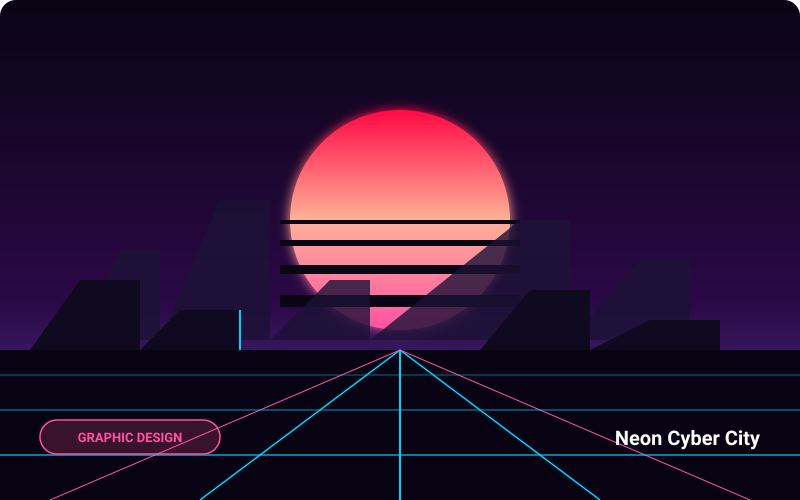
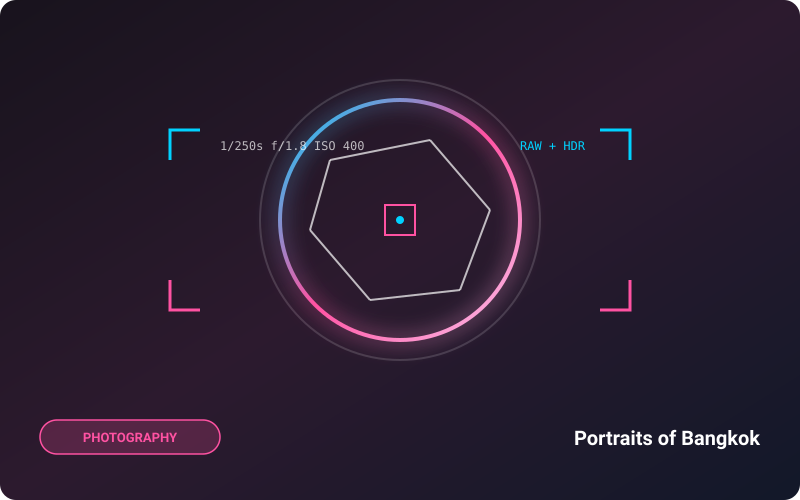
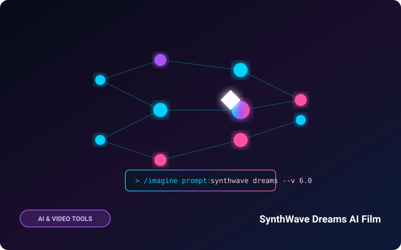

Aurora 3D Experience
เว็บไซต์เชิงประสบการณ์ 3 มิติ จำลองปรากฏการณ์แสงเหนือที่ตอบสนองต่อการขยับเมาส์และจังหวะเสียงดนตรีแบบเรียลไทม์

Neon Cyber City
งานออกแบบคอนเซ็ปต์อาร์ตเมืองไซเบอร์พังค์ยามค่ำคืน ด้วยเทคนิค Matte Painting และ Digital Illustration คุมโทนสีฟ้า-ชมพู

Pulse Beat Visualizer
แอนิเมชันโมชันกราฟิกแสดงผลคลื่นเสียงแบบ Sound-Reactive ผสมผสานเส้นลำแสงนีออนและความถี่ดนตรีแนว Synthwave

FinFlow Mobile Banking
การออกแบบแอปพลิเคชันธุรกรรมการเงินสำหรับคนรุ่นใหม่ เน้นความเรียบง่าย สวยงาม มินิมอล และลดความสับสนในการใช้งาน

Portraits of Bangkok
ชุดภาพถ่ายสารคดีสตรีทสะท้อนสีสันยามค่ำคืนในกรุงเทพฯ ถ่ายทอดอารมณ์ผู้คนผ่านแสงสะท้อนจากกระจกและนีออนย่านเยาวราช

SynthWave Dreams AI Film
ภาพยนตร์สั้นเชิงทดลองที่สร้างสรรค์ภาพและฉากด้วย Generative AI ควบคู่กับการตัดต่อและเรียบเรียงเสียงดนตรีสดแบบมนุษย์
ชื่นชอบสไตล์ผลงานและต้องการร่วมงานด้วยกัน?
ผมเปิดรับทั้งงานฝึกงาน โครงการฟรีแลนซ์ และงานครีเอทีฟมัลติมีเดีย สามารถทักทายหรือส่งรายละเอียดโปรเจกต์ได้เลย
ติดต่อร่วมงานกันเลย (Contact Me)